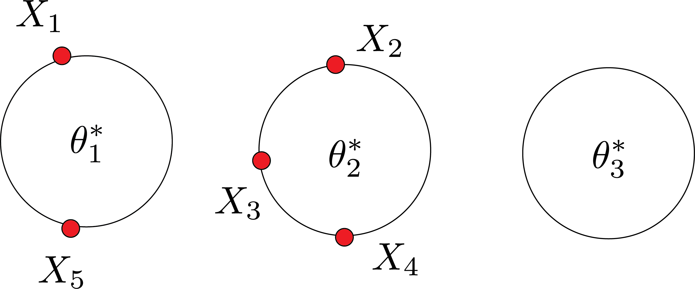
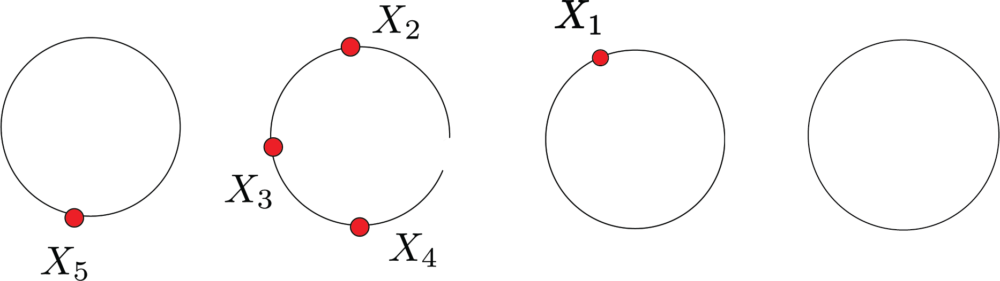

Approximation Inference
In the previous post, we talked about Gibbs sampling and posterior inference. However, computing Bayesian posteriors can be impractical. Two approaches:
- Simulation
- Variational Inference
Simulation is an unbiased and “right” way to do it.
The template for the generative model is:
- Choose $Z$
- Given $z$, generative (sample) X
We often want to invert this by posterior inference:
- Given $X$
- What is $Z$ that generated it?
If we have a random vector $Z\sim p(Z|x)$, we might want to compute the following:
- marginal probabilities $P(Z_i=z|x)$
- marginal means $\mathbb{E}(Z_i=z|x)$
- most probable assignments $z^*= \arg\max_z P(\{Z_i=z_i\}|x)$. This could be called a maximum apposteriori (MAP) problem.
- maximum marginals $z_i^* = \arg\max_{z_i} P(Z_i=z_i|x)$
- joint probability $P(Z|x)$
- joint mean $P(Z|x)$
We can only solve these problems in a reasonable amount of time. We have to approximate in some way.
Wrap up Gibbs sampling
Before continuing with simulation and variational methods, let’s finish derivations for Gibbs sampling.
$$ \begin{aligned} F \sim \text{DP}(\alpha,F_0) \\ \theta_1,\theta_2,..,\theta_n | F \sim F \\ X_i | \theta_i \sim f(x|\theta_i), i=1,2,..,n \end{aligned} $$
Last time we talked about one way of CRP that we have $\theta_i^*$:

Today, we consider the case that we don’t have $\theta_i^*$. $Z_1,Z_2,..,Z_n$ and $\theta_1,\theta_2,..,\theta_n$. $Z_i$ will be which table the customer is sitting at (i.e., clustering of the data). In the previous example, $Z_1=1$ and $Z_2=2$. We don’t need those $\theta$.
In the Gibbs sampler, we iterate over $i$ from $1$ to $n$. We reassign $i$ to some table.
What is that, probabilistically?
- we compute this $P(z_i|Z_{-i})$
- we sample $z_i$ from this distribution.
Now, let’s compute: $$ P(Z_1=j|Z_2,Z_3,Z_4,Z_5) $$
There are $3$ different possibilities: $$ \begin{align} j=1,w_1: & \frac{1}{4+\alpha} p(x_1|x_5) \end{align} $$
EXample:
Assume $p(x|\theta)$ is a Normal distribution $\text{Normal}(\theta,\sigma^2)$. $$ F_0 = \text{Normal}(\mu_0,\tau_0^2) $$
The posterior: $$ \begin{align} \text{Normal}(\bar{\theta_n},\bar{\tau_n}^2) \\ \bar{\theta_n} = w_n \bar{X_n}+(1-w_n)\mu_0 \end{align} $$
Where:
$$ \begin{align} w_n = \frac{1}{1+\frac{\sigma^2/n}{\bar{\tau_n}^2}} \\ \frac{1}{\tau_n^2} = \frac{1}{\sigma^2_n} + \frac{1}{\tau_0^2} \end{align} $$
Therefore:
$$ p(x_1|x_5) = \text{Normal}(w_1x_5+(1-w_1)\mu_0,\tau_1^2+\sigma^2) $$
where $w_1$ and $\tau_1$ can be easily derived from $w_n$ and $\tau_n$ for $n=1$.
Similarly:
$$
\begin{align}
j=2,w_2: & \frac{3}{4+\alpha} p(x_1|x_2,x_3,x_4) \\
=&w_3\frac{x_1+x_2+x_3}{3} + (1-w_3)\mu_0
\end{align}
$$
**why $w_3$ Answer: because there are three data points.
And similarly, for variance and table 3.
How about the new table?
$$ \begin{align} j=\text{new table}, w_0: & \frac{\alpha}{4+\alpha} p(x_1|F_0) \end{align} $$
where $ p(x_1|F_0) = \text{Normal}(\mu_0,\tau_0^2+\sigma^2)$
Now we have $3$ numbers which are not necessarily sum up to one. We can normalize them. That gives me weights in a $ 3-sided die.
If the die comes up $w_2$, I move the customer to table $2$. If it’s in the new table, I will move to that table, and if it’s in table 1, I will leave her in table 1. All this is one step in Gibbs sampler. Then I take another data point $x_2$ and repeat.
The predictive density for new point $x$ given this clustering.

$$ \begin{aligned} \text{table 1: } &\frac{1}{5+\alpha}p(x|x_5) + \text{table 3: }\frac{1}{5+\alpha}p(x|x_1)\\ +\text{table 2: }&\frac{3}{5+\alpha}p(x|x_2,x_4,x_5)+\text{new table: }\frac{\alpha}{5+\alpha}p(x|F_0) \end{aligned} $$
Gibbs sampling for the DPM
For each point $x_i$:
-
For every non-empty cluster $j$, compute: $$ w_j = \frac{n_{j,-i}}{n-1+\alpha} p(x_i|x_{i’} \text{ in cluster j for } i’\neq i) $$
-
For the empty cluster, compute:
$$ w_0 = \frac{\alpha}{n-1+\alpha}p(x_i|F_0) $$
- Normalize $w_j\leftarrow w_j/\sum_kw_k$
- Reassign $x_i$ to cluster $j$ with probability $w_j$, possibly starting a new cluster
For each clustering $c^{(b)}$, get a predictive density:
$$ p(x|c_{1:n}^{(b)},x_{1:n}) = \sum_j \frac{n_j^{(b)}}{n+\alpha} p(x|x_i \text{in cluster }c_j^{(b)}) + \frac{\alpha}{n+\alpha} p(x|F_0) $$
The posterior mean is approximated as:
$$ p(x_{n+1}|x_{1:n}) = \frac{1}{B}\sum_{b=1}^B p(x_{n+1}|c_{1:n}^{(b)},x_{1:n}) $$
Variational methods
Variational methods are fundamentally different. Gibbs sampling is a stochastic approximation, while variational methods give us a deterministic approximation. Variational methods use numerical convergence. Yet, in Gibbs sampling, it was a distributional notion of convergence.
Ising model
We have a graph with edges $E$ and vertices $V$. Each node $i$ has a random variable $Z_i$ that can be up $z_i=1$ or down $Z_i=0$:
$$ P_{\beta}(Z_1,..,Z_n) \propto \exp\Big( \sum_{s\in V}\beta_s Z_s+ \sum_{(s,t)\in E}\beta_{st}z_sz_t \Big) $$
You can think of these atoms as politicians and $Z_i$ as votes. For example, politicians are heavily connected to members of their party and weakly connected with those outside their party.
I can’t compute mean posterior, marginal probability, or anything else. I need either stochastic approximation or variational approximation.
Gibbs sampler (stochastic approximation)
- Choose vertex $s\in V$ at random
- Sample $u\sim \text{Uniform}(0,1)$ and update:
$$ Z_s = \begin{cases} 1 & u \leq (1+\exp(-\beta_s-\sum_{t\in N(s)}\beta_{st}z_t))^{-1}\\ 0 & \text{ otherwise } \end{cases} $$
where $\beta_{st}$ denotes strength of influence node $s$ has on node $t$. This is precisely like Logistic regression.
- Iterate
Mean field variational algorithm (deterministic approximation)
- Choose vertex $s\in V$ at random
- Update:
$$ \mu_s = (1+\exp(-\beta_s-\sum_{t\in N(s)}\beta_{st}z_t))^{-1} $$ 3. Iterate
Deterministic vs. stochastic approximation
- The $z_i$ variables are random
- The $\mu_i$ variables are deterministic
- The Gibbs sampler convergence is in the distribution
- The mean field convergence is numerical
- The Gibbs sampler approximates the full distribution
- The mean field algorithm approximates the mean of each node
Example 2: A finite mixture model
Fix two distributions $F_0$ and $F_1$: $$ \begin{align} \theta \sim \text{Beta}(\alpha,\beta) \\ X| \theta \sim \theta F_1 +(1-\theta)F_0 \end{align} $$
the likelihood for the data $x_1,..,x_n$ is: $$ p(x_{1:n}) =\int_0^1 \text{Beta}(\theta|\alpha,\beta) \prod_{i=1}^n(\theta f_1(x_i)+(1-\theta)f_0(x_i))d\theta $$
Goal: to approximate the posterior $p(\theta|x_{1:n})$
Gibbs sampler (Stochastic approximation)
- sample $Z_i| \theta,x_{1:n}$
- sample $\theta| z_{1:n},x_{1:n}$
first step: independently sample $u_i\sim \text{Uniform}(0,1)$ and:
$$ Z_i = \begin{cases} 1 & u_i \leq \frac{\theta f_1(x_i)}{\theta f_1(x_i)+(1-\theta)f_0(x_i)}\\ 0 & \text{ otherwise } \end{cases} $$
second step:
$$ \theta \sim \text{Beta}\Big( \sum_{i=1}^n z_i +\alpha,n- \sum_{i=1}^n z_i +\beta \Big) $$
Posterior $p(\theta|x_{1:n})$ is approximated as a mixture of Beta distributions, number of components is $n + 1$. We can also not have $\theta$ like collapsed Gibbs sampler.
Variational Inference (deterministic approximation)
Iterate the following steps for variational parameters $q_{1:n}$ and $(\gamma_1,\gamma_2)$
-
Holding $q_i$ fixed, set $\gamma=(\gamma_1,\gamma_2)$ to $$ \gamma_1 = \alpha + \sum_{i=1}^n q_i , \gamma_2 = \beta+n-\sum_{i=1}^n q_i $$
-
Holding $\gamma_1$ and $\gamma_2$ fixed, set $q_i$ to: $$ q_i = \frac{f_1(x_i)\exp \psi(\gamma_1)}{f_1(x_i)\exp \psi(\gamma_1)+f_0(x_i)\exp \psi(\gamma_2)} $$
After convergence, the approximate posterior distribution over $\theta$ is:
$$ \hat{p}(\theta| x_{1:n}) = \text{Beta}(\theta|\gamma_1,\gamma_2) $$
We covered this post in the intermediate machine learning SDS 365/565, Yale University, John Lafferty, where I was TF.